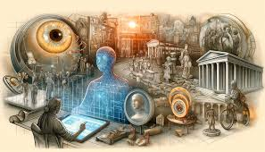
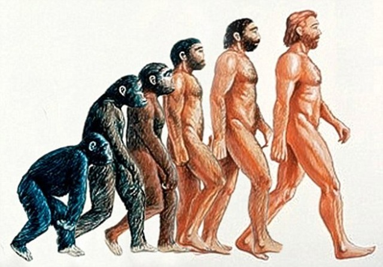
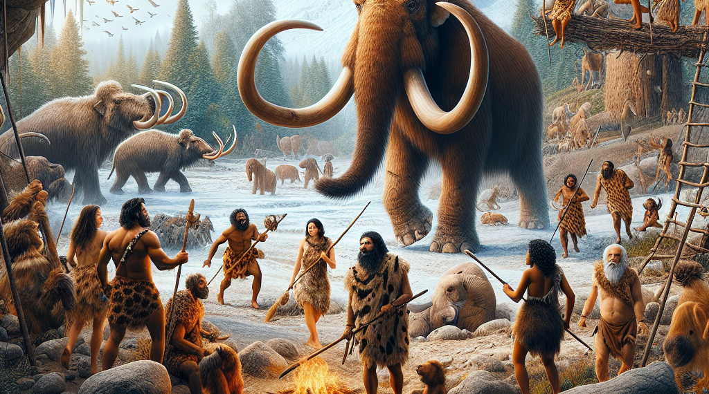
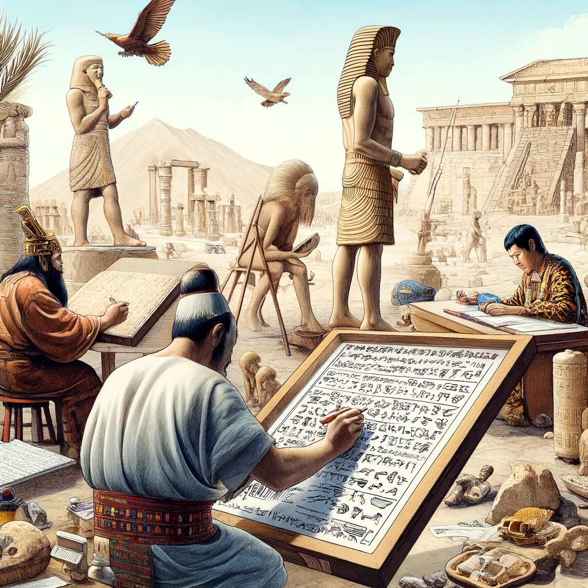
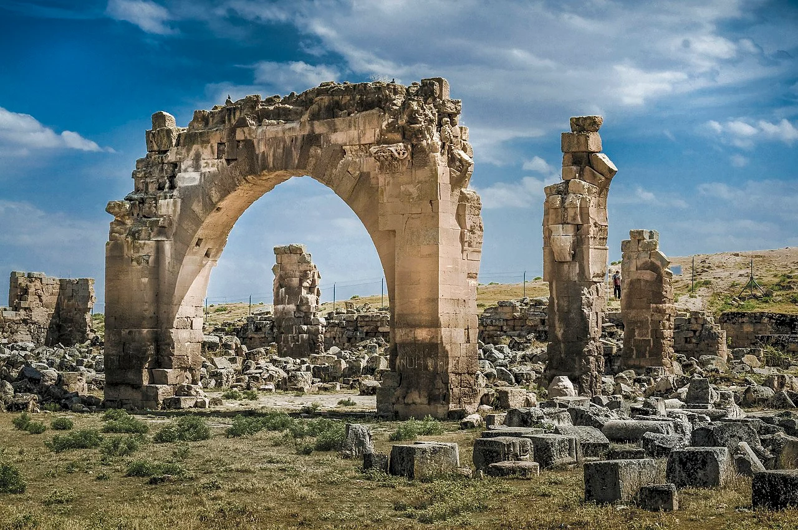
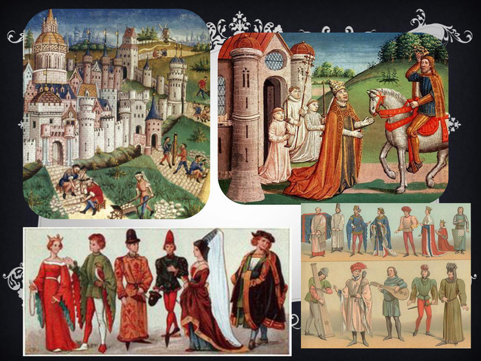

Sección 1La historia de la humanidad: de la evolución a la igualdad
Tema 1: La Historia
La Historia estudia el pasado de la humanidad a través de fuentes históricas.
📜 La palabra historia proviene del griego historía, que significa investigar, preguntar y buscar información.
La Historia es una ciencia social que analiza los acontecimientos del pasado para comprender cómo vivían las personas,
cómo se organizaban las sociedades y cómo se produjeron los cambios a lo largo del tiempo.
Gracias a la historia podemos estudiar desde antiguas civilizaciones hasta procesos recientes,
analizando hechos políticos, sociales, económicos y culturales.

La ciencia histórica no busca reproducir íntegramente los sucesos del pasado, sino que estudia a los hombres en el tiempo, con el fin de que el historiador ponga énfasis al estudio integral de todas las manifestaciones humanas producidas a lo largo del proceso histórico entendiéndolas de acuerdo al tiempo y también al espacio donde se desarrollaron. También debe tener en cuenta las estrechas relaciones entre el pasado y el presente y su medio en la formulación del conocimiento histórico.
🏛️Importancia de la Historia
Conocer el pasado de la humanidad
Comprender leyes y tradiciones
Analizar la sociedad
Aprender de errores y logros
🧠 Conclusión
La Historia nos ayuda a comprender el pasado para entender el presente y mejorar el futuro.
A través de ella aprendemos de los errores y valoramos los logros de la humanidad.
🎮 Quiz – Tema 1
Tema 2: Evolución humana
La evolución humana explica el origen y desarrollo del ser humano.
🦴 La evolución humana u hominización es el nombre que recibe el proceso gradual e histórico de cambio biológico de los ancestros más primitivos (Australopithecus sp.) del ser humano hasta la aparición de nuestra especie tal y como hoy la conocemos (Homo sapiens).

El origen del hombre, específicamente del Homo sapiens, se encuentra en el contexto más amplio de la evolución de los primates y se centra en África, donde se originaron los primeros antepasados humanos. Este proceso evolutivo involucra una serie de cambios anatómicos, fisiológicos y comportamentales que ocurrieron a lo largo de millones de años. La prehistoria, una época anterior a la invención de la escritura, juega un papel esencial en nuestra comprensión del origen del hombre. Los fósiles y las herramientas de piedra son algunas de las principales fuentes de información que arrojan luz sobre esta etapa temprana de la evolución humana.
Características de la Evolución Humana
Haz clic en los recuadros para ver la información.
🚶 Bipedestación
Capacidad de caminar sobre dos piernas, liberando las manos para
fabricar herramientas y transportar objetos.
✋ Pulgares oponibles
Facilitaron la manipulación precisa de objetos y el desarrollo tecnológico.
🧠 Cerebración
Incremento del tamaño y complejidad del cerebro humano.
🎮 Quiz – Tema 2
Tema : Prehistoria
La Prehistoria es el periodo más antiguo de la humanidad.
🪨 Se divide en Paleolítico, Mesolítico y Neolítico.

La Prehistoria se refiere al periodo anterior a la invención de la escritura y abarca desde la aparición de los primeros seres humanos hasta aproximadamente el año 3000 a.C. Durante este tiempo, los humanos vivían en pequeñas comunidades nómadas y dependían de la caza, la recolección y la pesca para sobrevivir.
Cronología de la Prehistoria
Por convención, la Prehistoria comienza con la aparición en Sudáfrica de la primera especie de Homo Sapiens (nosotros) hace unos 200.000 años. Pero en otros casos, se considera que la prehistoria se inicia hace unos 2 millones de años con la aparición del primer homínido que puede utilizar herramientas de trabajo.
La Prehistoria se caracteriza por la falta de testimonios escritos. La investigación histórica se realiza a través del análisis de fósiles y herramientas producidos por el hombre en ese momento. Las ciencias que se ocupan de esta reconstrucción son la arqueología, la física, la antropología, etc.
Alrededor del año 3000 a.C, cuando aparece la escritura, se termina la Prehistoria. Sin embargo, esta cronología debe considerarse general e indicativa. Por ejemplo, desde el punto de vista cronológico, el término neolítico termina primero en Mesopotamia y sólo muchos siglos más tarde en Europa y América. Es decir, la Prehistoria no acaba con el nacimiento de las primeras grandes civilizaciones de la historia, sino que sigue existiendo durante muchos siglos en otras partes del mundo.
📜 Etapas de la Prehistoria
Selecciona una etapa
Haz clic en una etapa para ver la información aquí.
🎮 Quiz – Tema 3
x
x
x
Tema 4: Edad Antigua
La Edad Antigua inicia con la invención de la escritura.
📜 Surgen las primeras civilizaciones organizadas.

En esta etapa se desarrollaron grandes culturas como
Egipto, Mesopotamia, Grecia y Roma.
La Edad Antigua es el primer periodo de la historia, iniciado alrededor del 3300-3500 a.C. con la invención de la escritura en Mesopotamia y Egipto, lo que marca el fin de la prehistoria. Este periodo destaca por el surgimiento de grandes civilizaciones, ciudades-estado, leyes, el comercio organizado y una sociedad estratificada.
🏛 Civilizaciones antiguas
EG Egipto
IQ Mesopotamia
GR Grecia
IT Roma
Aspectos clave de la Edad Antigua:
• Inicio: Marcado por la invención de la escritura (cuneiforme en Mesopotamia y jeroglífica en Egipto) para el registro de mercancías y administración, hacia el 3000-3300 a.C..
• Civilizaciones principales: Incluye a Mesopotamia, Egipto, Grecia y Roma, las cuales desarrollaron los primeros Estados centralizados.
• Aportaciones: Creación de las primeras formas de ley, la moneda, el comercio a larga distancia, avances técnicos, religiones organizadas (judaísmo, cristianismo) y el desarrollo del urbanismo.
• Final: Se establece con la caída del Imperio Romano de Occidente en el año 476 d.C..
La escritura permitió a estas sociedades registrar sus mitos, historias y transacciones, dejando testimonios que permiten a los historiadores estudiar profundamente este periodo.

🎮 Quiz – Tema 4
Tema 5: Edad Media
La Edad Media se desarrolló entre los siglos V y XV.
🏰 Se caracterizó por el feudalismo y el poder de la Iglesia.
La Edad Media se prolongó durante mil años y comenzó con la caída del Imperio romano de Occidente en el año 476 y finalizó con la caída del Imperio bizantino en 1453 o con el descubrimiento europeo de América en 1492.

Durante este periodo surgieron castillos, reinos y
nuevas formas de organización social.
El concepto de Edad Media fue creado por los humanistas europeos de los siglos XIV y XV, quienes pensaban su época como un renacer de la antigüedad grecorromana. Según estos pensadores, entre esa antigüedad llamada clásica y su época, la del Humanismo y el Renacimiento, se extendía una edad intermedia que era menospreciada por la influencia que había ejercido la Iglesia cristiana en todos los campos del saber.
La Edad Media recibió su nombre por ser considerada una etapa intermedia entre la Edad Antigua y la Edad Moderna. Durante este período, la sociedad se organizó principalmente de acuerdo a un orden feudal, esencialmente rural o campesino. Sin embargo, también experimentó un resurgimiento de las ciudades a partir del siglo XI y el nacimiento de una nueva clase social: la burguesía.
La vida medieval estuvo lejos de ser estática y uniforme. Fue escenario de numerosos desplazamientos humanos, epidemias (como la peste negra), guerras y nuevas formas políticas, incluida la formación y expansión de imperios más allá de las fronteras de Europa occidental, como los imperios musulmanes o el Imperio bizantino. Esto originó conflictos y conquistas, como la invasión musulmana de la península ibérica, las Cruzadas y la Reconquista española.
⚔️ Características de la Edad Media
👆 Haz clic en cada punto de la línea de tiempo para ver la información
Siglo V
🏰 Feudalismo
Sistema social basado en la posesión de tierras.
Los señores feudales ofrecían protección a cambio de trabajo y lealtad de campesinos y vasallos.
Siglos V–X
✝️ Poder religioso
La Iglesia tuvo gran influencia política y social.
Controló la educación, la cultura y las creencias durante la Edad Media.
Siglos XI–XIII
👑 Reyes y nobles
Los reyes gobernaban con apoyo de la nobleza.
Ejercían poder militar, político y controlaban extensos territorios.
Siglos XIV–XV
🌾 Campesinos
La mayoría de la población medieval.
Trabajaban la tierra y pagaban tributos a los señores feudales.